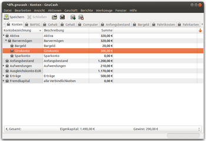

GnuCash
Dieser Artikel wurde für die folgenden Ubuntu-Versionen getestet:
Ubuntu 16.04 Xenial Xerus
Zum Verständnis dieses Artikels sind folgende Seiten hilfreich:
Das Programm GnuCash 
 ist eine Komplettlösung zur Verwaltung der Finanzen von Privatanwendern und Kleinbetrieben. Die Oberfläche ist einfach und leicht zu bedienen, verwendet aber das Prinzip der doppelten Buchführung. Eine Scheckbuch-ähnliche Oberfläche erlaubt die Eingabe und das Verfolgen von Bankkonten, Aktien und sogar Währungshandel. GnuCash unterstützt Homebanking per HBCI ohne Umwege. Bei früheren Ubuntu-Versionen musste dafür aus Fremdquellen installiert werden, in aktuellen Versionen wird AqBanking als Abhängigkeit automatisch mitinstalliert.
ist eine Komplettlösung zur Verwaltung der Finanzen von Privatanwendern und Kleinbetrieben. Die Oberfläche ist einfach und leicht zu bedienen, verwendet aber das Prinzip der doppelten Buchführung. Eine Scheckbuch-ähnliche Oberfläche erlaubt die Eingabe und das Verfolgen von Bankkonten, Aktien und sogar Währungshandel. GnuCash unterstützt Homebanking per HBCI ohne Umwege. Bei früheren Ubuntu-Versionen musste dafür aus Fremdquellen installiert werden, in aktuellen Versionen wird AqBanking als Abhängigkeit automatisch mitinstalliert.
Die Verwaltung von Kunden, Lieferanten und Rechnungen ist für den Geschäftsverkehr enthalten. Weitere Features sind terminierte Buchungen, Import von OFX- und QIF-Dateien, zahlreiche Berichte und Grafiken mit Kreis- und Balkendiagrammen und eine benutzerdefinierbare Oberfläche. Für Neueinsteiger ist ein Assistent zur Kontenerstellung vorhanden. Dieser startet gleich beim ersten Programmstart nach der Installation von GnuCash. Bestehende Dateien mit Finanzdaten z.B. aus Quicken oder Microsoft Money können problemlos über den QIF-Import eingelesen werden.
Weitere Informationen bekommt man im deutschen GnuCash-Wiki und dem englischsprachigen GnuCash-Wiki .

Installation¶
GnuCash ist kein Bestandteil einer Standard-Installation. Für das Programm muss folgendes Paket installiert werden [1]:
gnucash (universe)
 mit apturl
mit apturl
Paketliste zum Kopieren:
sudo apt-get install gnucash
sudo aptitude install gnucash
Damit die integrierte Hilfe funktioniert, sollte folgendes Paket installiert sein:
gnucash-docs (universe)
mit apturl
Paketliste zum Kopieren:
sudo apt-get install gnucash-docs
sudo aptitude install gnucash-docs
Nach der Installation dieses Pakets stehen ein englischsprachiger GnuCash-Kurs und eine deutschsprachige Hilfe zur Verfügung. Das Programm kann als gnucash gestartet werden [2]
Aus dem Quellcode kompilieren¶
Leider lässt sich das vorkompilierte Paket von GnuCash nicht so einfach installieren - es kann zu Konflikten mit Pfaden mit der Version 2.4.7 aus den Paketquellen von Ubuntu. Das Problem kann, etwas weniger elegant aber effizient, umgangen werden:
Dazu lädt man den Quellcode herunter und installiert die neue Version nach /opt/gnucash/ - hier die detaillierte Anleitung:
Quellcode herunterladen in ein Verzeichnis kopieren, das nicht mehr gelöscht werden sollte. Der Grund: wenn man das Programm im nachhinein deinstalliert, muss dies mit dem Befehl
make uninstallerfolgen - und zwar in dem Verzeichnis, in dem man den Code kompiliert hat.Quellcode entpacken, ein Terminalfenster öffnen und in das Verzeichnis wechseln, wo der entpackte Code liegt. Beispiel:
cd ~/gnucash-2.4.8
Das Installations-Zielverzeichnis erstellen:
sudo mkdir /opt/gnucash
Weiter mit:
./configure --prefix=/opt/gnucash
Es ist gut möglich, dass nun Fehlermeldungen erscheinen, da einzelne Pakete, die zur Kompilierung des Codes benötigt werden, nicht installiert sind. Die Ausgabe gibt Hinweise darauf, welche das sind - manchmal etwas versteckt. Diese kann man einfach nachinstallieren und den Befehl dann nochmal ausführen.
Nun
make
eingeben - auch hier können noch Fehlermeldungen betreffend fehlender Pakete auftauchen.
Zum Schluss noch das finale
sudo make install
Da durch diesen Prozess GnuCash nicht wie üblich installiert wurde, kann man das Programm nicht wie gewohnt starten. Ubuntu meldet, dass der Befehl "gnucash" nicht gefunden wird (sofern man die alte Version deinstalliert hat). Auch auf ein Symbol im Startmenü muss man verzichten. Der Befehl zum Starten von GnuCash in der Konsole muss den Pfad der auszuführenden Datei beinhalten. In diesem Fall
/opt/gnucash/bin/gnucash
HBCI-Konfiguration¶
Hinweis:
Sollte nach der Installation der gnucash-aqbanking-*-Pakete der Menüeintrag "Werkzeuge -> HBCI Einrichtung" nicht erscheinen, hilft es unter Umständen, den versteckten Ordner .gnucash im Home-Verzeichnis umzubenennen und GnuCash neu zu starten.
Der HBCI-Zugang ist vergleichbar mit Benutzername, Kennwort und IMAP/POP3-Zugangsdaten von E-Mail Anbietern und wird für die Online-Banking-Anbindung benötigt, damit GnuCash die Umsätze auf dem Kontoauszug abrufen kann. Gebraucht werden 5 Angaben: Server-URL der Bank, HBCI-Version, Benutzername, Benutzerkennung und Kundennummer. Die drei letztgenannten können eine andere Bedeutung haben, als ihre Namen suggerieren und sind bei Banken nicht einheitlich. Die HBCI-Angaben sind meistens schwer auf der Bankenhomepage zu finden (bei Problemen beim Kundenservice anrufen).
Nach dem Starten von GnuCash wählt man im Menü "Werkzeuge -> HBCI Einrichtung". Es öffnet sich der separate Qt-Assistent zur Konfiguration. Danach im Register "Benutzer -> Benutzer anlegen -> HBCI backend using AqHBCI -> PIN/TAN einrichten" die Bankdaten (Bankleitzahl: 12345678, Bankname: Bankname, Server-URL: https://hbci.xxxx) eingeben. Beispielsweise entspricht bei der comdirect der Benutzername der Konto-Nr., die Benutzerkennung der Zugangsnummer zum Login auf der Homepage und die Kundennummer wird leer gelassen. Unter "Erweiterte Einstellungen" wird bei der comdirect die HBCI-Version auf 3.0 und der Haken bei SSLv3 gesetzt.
Falls bei anderen Banken eine Fehlermeldung "Error receiving response (-66)" erscheint, sollte die HBCI-Version und/oder SSLv3 entsprechend den Bankvorgaben geändert werden. Im Anschluss wird die HBCI-Einrichtung getestet: Sicherheitszertifikat akzeptieren und vier Mal die PIN für das Online-Banking eingeben. Bei Erfolg ist die Online-Banking-Anbindung damit abgeschlossen. Zuletzt muss man den HBCI-Konten einen GnuCash-Kontoeintrag zuweisen - z.B. "Aktiva -> Barvermögen -> Girokonto" und "Aktiva -> Barvermögen -> Sparbuch" (auf die Kontonummer achten, damit das Girokonto tatsächlich auch dem Konto Girokonto und das Sparbuch dem Sparbuch zugeteilt wird).
Nutzung¶
Nachdem das Konto für Online-Banking eingerichtet ist, werden die Kontoumsätze zum ersten Mal abgerufen: Auf das Konto klicken, dessen Umsätze abgerufen werden sollen dann "Aktionen -> Online Aktionen -> Abfrage Kontoumsätze..." Im folgenden Fenster legt man fest, von welchem Zeitraum die Umsätze abgerufen werden sollen. Bei der ersten Abfrage ist "Frühestes mögliches Datum" (meistens die letzten 180 Tage) und "bis" Jetzt standardmäßig ausgewählt. Bei allen späteren Abfragen ist "Letztes Abrufdatum" die Voreinstellung. Mit Klick auf OK und Eingabe der PIN (es empfiehlt sich PIN merken zu aktivieren, womit die PIN nur ein Mal, statt drei Mal abgefragt wird) erscheint ein Pop-Up Fenster in dem das Zertifikat der Bank akzeptiert werden muss. Anschließend werden alle Kontoumsätze abgerufen. Bei neuen Umsätzen werden diese in einem neuen Fenster aufgelistet. Mit Doppelklick auf einen Umsatz kann dieses einem Konto zuordnet werden. GnuCash merkt sich diese Zuordnung für die Zukunft, d.h. wenn später dieser Umsatz (z.B. Miete) erscheint, wird es automatisch dem richtigen Konto zugewiesen (z.B. Wohnung). Damit dies möglichst zuverlässig funktioniert "Bearbeiten -> Einstellungen -> Online Banking -> Bayes-Algorithmus verwenden" aktivieren. Später kontrolliert man nur noch die Zuordnungen und bestätigst sie.
Damit der Kontostand in GnuCash mit dem der Bank übereinstimmt, wird ein Anfangskontostand in GnuCash benötigt. In der Grundeinstellung beträgt dieser 0,--~€ wovon alle Umsätze verrechnet werden, was zu einem anderen Kontostand, als dem Realen führt. Der Anfangsbestand berechnet sich: Realer Kontostand – GnuCash-Kontostand (nach Abruf der Umsätze). Beispiel: Der Kontostand beträgt real 5 €, während das GnuCash-Konto -8 € anzeigt. Anfangsbestand: 5 € – –8 €=13 €. Dieser Betrag wird manuell als Anfangsbestand in das entsprechende Konto gesetzt und in das Konto „Anfangsbestand“ gebucht (= Doppelte Buchführung) – als Datum das Früheste nehmen damit es ganz oben in den Umsätzen erscheint.
Umsätze im Girokonto, die keinem Konto zugeordnet werden, landen zusätzlich entweder in „Ausgleichskonto“ bzw. in „Ausbuchungskonto, damit das Prinzip der Doppelten Buchführung erfüllt wird. Buchungen, die keinem Konto zugeordnet wurden, finden sich deshalb in diesen Konten. Beispiel: Der BAföG-Geldeingang ist in „Girokonto“ und auch in „Ausgleichskonto“ verbucht. Auf „Girokonto“ gehen und den Betrag in „Buchen“ dem Konto „BAföG“ in den Erträgen zuordnen – es verschwindet dann aus dem Ausgleichskonto. Das gleiche passiert mit den Ausgaben in „Ausbuchungskonto“. Wer das BAföG ganz genau verbuchen möchte, teilt den Betrag („Mehrteilige Buchung“ siehe unten) in 2 Teile wovon ein Teil unter Erträgen „BAföG“, die andere unter "Fremdkapital --> Kredite --> „BAföG“" verbucht wird.
Viele Anfänger verwirrt diese Tatsache: Wird eine Buchung gelöscht – egal aus welchem Konto (Doppelte Buchführung) – ist sie aus beiden Konten verschwunden. Da es leider den Button „rückgängig machen“ nicht gibt, kann man sich mit dem erneuten Abfragen aller Kontoumsätze mit der Möglichkeit Frühestes mögliches Datum behelfen (sofern der gelöschte Umsatz noch abrufbar ist). Der gelöschte Umsatz erscheint dann als ein neuer Umsatz im Pop-Up-Fenster, der neu zugeordnet werden kann. Buchungen, die falsch gebucht wurden, korrigiert man, indem die Zuordnung vom Konto des Geldeingangs (Girokonto, Bargeld, Zinsen für Sparbuch usw.) geändert wird. Entdeckt man bspw. einen Handyumsatz im Konto „Miete“ gelangt mit dem Button „Zur passenden Gegenbuchung im Gegenkonto gehen“ einfach in das Konto „Girokonto“ und bucht den falsch gebuchten Umsatz in das Konto „Handy“.
Über "Aktionen -> Online Aktionen" können Saldo oder Umsätze abgerufen werden, allerdings nur, wenn man vorher das betreffende Konto markiert hat. Ansonsten würde nichts passieren.
Kleiner Tipp: Sollte sich nach dem Saldoabruf der Buchhaltungs-Dialog nicht schließen lassen, dann liegt das wahrscheinlich daran, dass Eingaben-Ausgaben und der abgerufene Saldo nicht übereinstimmen, weil nur die Umsätze vom letzten Monat verfügbar sind. Hierfür einfach die Differenz von Saldo und Umsätzen als Anfangsbestand eingeben, dann stimmt die Buchhaltung und die Schaltfläche "Fertig" lässt sich anwählen.
Über "Aktionen -> Online Aktionen" können außerdem Überweisungen getätigt und Vorlagen erstellt werden. Aber nur wenn man vorher das betreffende Konto markiert hat. Ansonsten würde nichts passieren. Auch wenn die Bank das iTAN-Verfahren verwendet, sollte es keine Probleme geben. Allerdings muss man in diesem Fall bereits verbrauchte TANs kennen, da keine spezielle, sondern eine unverbrauchte TAN angefordert wird (wie beim althergebrachten TAN-Verfahren).
Wertpapiergeschäfte¶
GnuCash kann auch mit Wertpapieren umgehen: Neues Konto anlegen (Button), Kontoart z.B. Investmentfond, und die Anteile des Fonts im Konto angeben. Dann Konto markieren (ein Mal draufklicken) "Werkzeuge -> Wertpapier-Editor -> Hinzufügen". Namen des Wertpapiers eingeben, Typ angeben, WKN, ISIN oder anderen Code hinzufügen, "Börsenquelle online abrufen" aktivieren und am besten "Mehrere Kursquellen" aktivieren.
WICHTIG! Bei Symbol wird die Bezeichnung des jeweiligen Wertes an der Börse angegeben. Dies kann man sehr leicht z.B. über Yahoo herausfinden. Für die Nordex AG zum Beispiel http://de.finance.yahoo.com/lookup?s=NORDEX in den Browser eingeben und die in der Spalte Ticker angezeigte Bezeichnung verwenden. für die Börse Frankfurt wäre das z.B.NDX1.F.
Das aktuelle Vermögen von Wertpapieren lässt sich abrufen "Werkzeuge -> Kurs-Datenbank -> Kurse abrufen". Evtl. muss die Währung nach dem Abrufen unter "Bearbeiten" (im selben Fenster) geändert werden.
Dateiformat bearbeiten¶
Sollte man das Dateiformat lesen wollen oder in eigene Programme einbauen wollen, so kann man die freie Java-Bibliothek verwenden. Hierzu muss Java installiert sein.
Tipps¶
Platzhalter und versteckte Konten¶
Konten, die nicht genutzt werden, z.B. alte Konten lassen sich unsichtbar machen, damit sie nicht irritieren und keine Beträge aus Versehen eingebucht werden können: Auf das Konto klicken, das versteckt werden soll: Button "Ausgewähltes Konto bearbeiten -> versteckt". Versteckte Konten lassen sich auch wieder sichtbar machen "Ansicht -> filtern nach... -> Weitere -> Versteckte Konten anzeigen".
Nicht mehr genutzte Konten sollten nicht gelöscht werden, da sonst die verbuchten Beträge in der Gesamtrechnung fehlen. Konten, die wie ein „Überordner“ („Auto“) genutzt werden und die eigentlichen Konten beinhalten („Kfz-Versicherung“, „Anschaffungspreis“), können als Platzhalter verwendet werden, womit sie angezeigt werden, aber in die keine Umsätze gebucht werden können: Häkchen aktivieren "Ausgewähltes Konto bearbeiten -> Platzhalter".
Berichte erstellen¶
Berichte sind Zusammenfassungen von einem oder mehreren Konten. Beispielsweise werden für die Steuererklärung die Werbungskosten benötigt. Hierunter fallen z.B. unter anderem alle Kosten für Fachliteratur, Berufskleidung und Bürobedarf, für die jeweils ein eigenes Konto in GnuCash angelegt werden kann. Ziel eines Berichts ist eine Übersicht über alle Werbungskosten zu erstellen, von der der Finanzbeamte jeden Posten abhaken kann. Ein neuer Bericht wird so erstellt "Berichte -> Buchungsbericht". Ein leerer Bericht wird angezeigt. "Berichtsoptionen ändern" -> Im Reiter "Allgemein -> Berichtsname" z.B. "Werbungskosten letztes Jahr" "Anfangsdatum" Anfang des vorherigen Jahres "Enddatum" Ende des vorherigen Jahres. Im Reiter "Konten" alle relevanten Konten auswählen. Reiter "Anzeige" z.B. Datum, Beschreibung, Buchungstext, Bemerkung, volle Kontobezeichnung des Gegenkontos benutzen aktivieren, "Betrag": Einzel, Gesamtsumme und Vorzeichenumkehr: Habenkonto aktivieren. Im Reiter Sortieren Primärschlüssel: Kontobezeichnung, Primärschlüssel mit Zwischensumme, Hauptsortier-Reihenfolge: Aufsteigend, Sekundärschlüssel: Datum, Sekundäre Zwischensumme für Datumsschlüssel: Keine, Sekundäre Sortierreihenfolge: Aufsteigend einstellen. OK und schließlich auf den Button Speichern klicken.
Um den Bericht zu nutzen, "Berichte -> Benutzerdefinierte Berichte > Werbungskosten letztes Jahr -> Erstellen" Berichte können für alles Mögliche erstellt werden: Steuer (Sonderausgaben, Außergewöhnliche Belastungen usw.), aktuelle Werbungskosten zur Kontrolle, ob die Pauschale überschritten wird (Anfangsdatum und Enddatum des Berichts für Werbungskosten letztes Jahr ändern und unter neuem Namen Werbungskosten aktuelles Jahr speichern), Monatsausgaben, spezielle Ausgaben (Lebensmittel, Versicherungen).
Terminierte Buchungen¶
Um eine Übersicht über wiederkehrende Buchungen, z.B. Miete, Strom, Gehalt, Telefon und Versicherungen zu erhalten, bietet es sich an, diese als Terminierte Buchung zu "markieren". Hierbei kann man sich im voraus anzeigen lassen, welche Buchungen noch anstehen und ob der Buchungswert stimmt.
Beispiel: Der Rundfunkbeitrag in Höhe von 53,94 € wird alle drei Monate zum 15. abgebucht. Wenn diese Buchung als Terminierte Buchung übernommen wird, sieht man sofort, wann die nächste Zahlung vom Konto abgeht. Wird der korrekte Betrag abgebucht, entsteht ein Saldo von 0€, bei einem anderen Saldo, weiß man sofort, dass etwas nicht stimmt.
Umsetzung: Im Girokonto klickt man mit der rechten Maustaste auf die Buchung des Rundfunkbeitrags und wählt im Kontextmenü "Terminiert... -> Erweitert...". Im Reiter "Übersicht" belässt man die Häkchen bei "Aktiv". Wenn man möchte kann man für sich jede Terminierte Buchung eine Erinnerung erstellen "Im Voraus erinnern", die nur speziell für diese Buchung gilt. Daneben gibt es auch die Möglichkeit sich an alle Terminierte Buchungen mit einer festgelegten Anzahl an Tagen im voraus erinnern zu lassen: Menüleiste "Bearbeiten -> Einstellungen -> Terminierte Buchungen -> Im Voraus erinnern". Im Reiter "Häufigkeit" stellt man unter "Häufigkeit: Monatlich" ein und unter "Alle X Monate" ersetzt man X durch 3. Die Buchung wird im Dropdown-Menü auf den 15. gelegt und "außer am Wochenende" auf den "Nächster Werktag" gesetzt (Feiertage werden nicht berücksichtigt).
Die anstehenden Terminierten Buchungen lassen sich in einem Bericht darstellen: Menüleiste "Berichte -> Zukünftige Terminierte Buchungen". Die Darstellung dieses Berichts lässt sich individualisieren indem man auf das Zahnradsymbol (Berichtsoption ändern) klickt. Für eine dauerhafte Speicherung der Darstellung muss der Standardbericht unter "Berichtsoption ändern -> im Reiter Allgemein -> Berichtsname" geändert und anschließend mit Klick auf das Speichern-Symbol gesichert werden. Der individuelle Bericht findet sich unter "Berichte -> Benutzerdefinierte Berichte".
Alle Terminierten Buchungen lassen sich anzeigen und bearbeiten: Menüleiste "Aktionen -> Terminierte Buchungen -> Terminierte Buchungen Editor".
Mehrteilige Buchungen¶
Ein einzelner Umsatz (z.B. Einkauf von Bücher + Lebensmittel auf einem Kassenbon) soll mehreren Konten zugeteilt werden: Auf den Umsatz klicken -> "Aktionen -> Mehrteilige Buchung". Die Überschrift der Spalte „Einnahmen“ ändert sich dann zu „Gesamteinnahmen“ und „Ausgaben“ zu „Gesamtausgaben“. Beim Klick in die Spalte „Gesamtausgaben“, ändert sich der Spaltenkopf zu „Abhebung“. Der Umsatz erscheint dann bei „Abhebung“, eine Zeile darunter bei Einzahlung und noch mal eine Zeile darunter wieder bei Abhebung. Neben Einzahlung, also in die Spalte Abhebung, trägt man den Preis für die Bücher ein und bestätigt mit ⏎ . Der Betrag steht anschließend in der Spalte Einzahlung, während sich darüber der Betrag automatisch auf die Differenz (Umsatz - Bücherkosten) verkleinert hat. Beide Beträge können nun den entsprechenden Konten zugewiesen werden. Hat die Buchung mehr als zwei Teilbuchungen, so müssen die Beträge erst entsprechenden Konten zugewiesen werden, bevor die dritte, vierte ... Buchung durchgeführt wird.
Backups¶
Die GnuCash-Datei am besten in einen eigenen Ordner z.B. „Buchhaltung“ speichern. In denselben Ordner werden auch die automatischen Backups gespeichert. Die Einstellungen hierfür finden sich unter "Bearbeiten -> Einstellungen -> Allgemein -> Dateien Zeitintervall automatisch speichern und Logdateien aufbewahren". Die Backups werden als Dateiname.xax.JJJJMMTThhmmss.xac gespeichert.
Sonstiges¶
mit +/- auf das Datum lässt sich dieses um einen Tag ändern
Grundrechenarten lassen sich in den Zellen für Beträge durchführen, z.B. 5,38*12 oder 2145,35-214,98
Bemerkungen können jedem Umsatz hinzugefügt werden: "Ansicht -> Bemerkungen anzeigen", dann Text hinzufügen
Datenbank Backend¶
Wenn man die GnuCash-Dateien als MySQL-, PostgreSQL- oder SQLite-Datenbank speichern möchte, müssen noch folgende Pakete installiert werden:
SQLite:
libdbi1
libdbd-sqlite3
mit apturl
Paketliste zum Kopieren:
sudo apt-get install libdbi1 libdbd-sqlite3
sudo aptitude install libdbi1 libdbd-sqlite3
PostgreSQL:
libdbi1
libdbd-pgsql
mit apturl
Paketliste zum Kopieren:
sudo apt-get install libdbi1 libdbd-pgsql
sudo aptitude install libdbi1 libdbd-pgsql
MySQL:
libdbi1
libdbd-mysql
mit apturl
Paketliste zum Kopieren:
sudo apt-get install libdbi1 libdbd-mysql
sudo aptitude install libdbi1 libdbd-mysql
CH-Kontenrahmen¶
Um die Kontenrahmenliste der Schweiz verwenden zu können, muss die Umgebungsvariable LC_MESSAGES=de_CH.UTF-8 gesetzt sein. Die Voreinstellung bei Ubuntu in der Schweiz ist wider Erwarten LC_MESSAGES=de_DE.UTF-8.
Problembehebung¶
HBCI - Ausdrucken des INI-Briefs geht nicht¶
Bei manchen Versionen von GnuCash gibt es einen Bug, durch den ist es nicht möglich ist, den für HBCI erforderlichen INI-Brief auszudrucken. Der Fehler wurde in neueren Versionen bereits behoben. Mit dem Weg über die Kommandozeile kann man das Problem umgehen. Zunächst benötigt man folgendes Paket:
aqbanking-tools (universe)
mit apturl
Paketliste zum Kopieren:
sudo apt-get install aqbanking-tools
sudo aptitude install aqbanking-tools
Erst muss man die HBCI-Daten ganz normal über die GUI eingeben und dann einen Benutzer anlegen. Dann kann man mit dem folgenden Befehl den eigenen INI-Brief erstellen:
aqhbci-tool4 iniletter -c BENUTZERKENNUNG
Die Benutzerkennung bekommt man von der Bank zugeschickt, sie ist auch bei der Erstellung eines HBCI-Benutzers nötig. Nach der Eingabe des Befehl fragt aqhbci-tool4 nach dem Kennwort für den eigenen Schlüssel und gibt den eigen INI-Brief im Terminal aus. Man kann die Ausgabe auch einfach in eine Datei umleiten, sodass man das Dokument einfach mit einem Editor öffnen ausdrucken kann. Die Umleitung sieht wie folgt aus:
aqhbci-tool4 iniletter -c BENUTZERKENNUNG > schluesseldatei.txt
Danach kann man die Datei öffnen und wie gewohnt ausdrucken.
Links¶
GnuCash FAQ
- Häufig gestellte Fragen Mailing-Listen
- Unterstützung und Kontakt mit Entwicklern und Benutzern Fehlerberichte
- Qualitätssicherung des Projekts
GnuCash für Android
- eine Android-Anwendung, mit der man Daten für GnuCash sammeln kann (Google Play)
- Erstellt mit Inyoka
-
 2004 – 2017 ubuntuusers.de • Einige Rechte vorbehalten
2004 – 2017 ubuntuusers.de • Einige Rechte vorbehalten
Lizenz • Kontakt • Datenschutz • Impressum • Serverstatus -
Serverhousing gespendet von